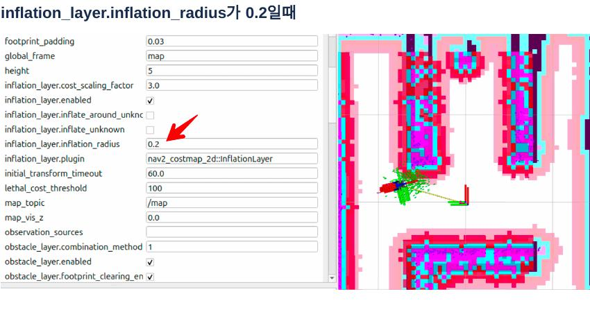
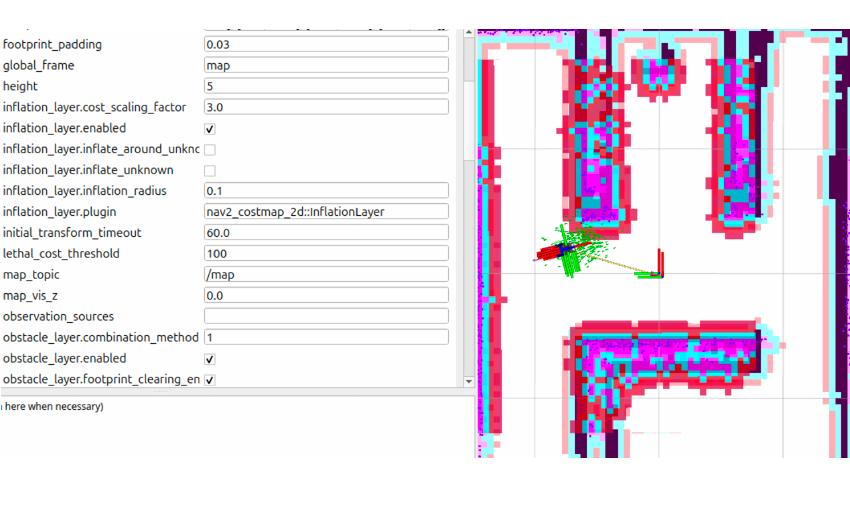
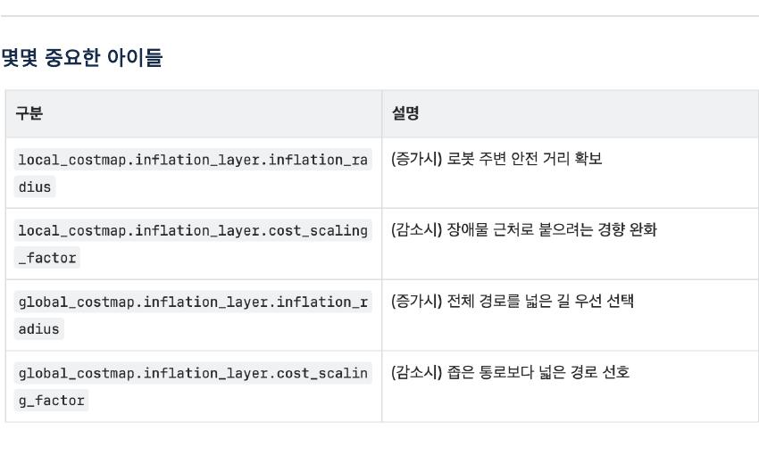
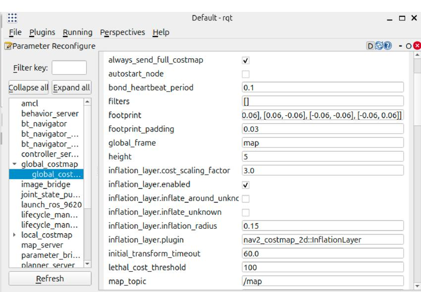

/cmd_vel을 계산하는 내비게이션 프레임워크입니다.반드시 기억할 핵심 포인트
11쪽 강의자료 요약
- Gazebo, Nav2, RViz2를 각각 실행하며 모든 노드가
use_sim_time:=true로 같은 시뮬레이션 시간을 사용해야 합니다. - 저장된 지도와 LaserScan이 어긋나면
2D Pose Estimate로 AMCL의 초기 위치와 방향을 다시 지정합니다. Nav2 Goal은 도착 좌표뿐 아니라 도착했을 때 로봇이 바라볼 방향까지 지정합니다.- Nav2는 전역 경로를 만들고 지역 장애물을 반영하며 속도 명령을 계속 갱신합니다.
inflation_radius는 장애물 주변에 로봇이 피해야 할 비용 영역을 얼마나 넓게 만들지 결정합니다.
전체 데이터 흐름
지도와 센서에서 속도 명령까지
저장 지도(my_map.yaml) ──→ Map Server ─┐
LaserScan + TF + Odometry ─→ AMCL ──────┤ 현재 자세
RViz2 Nav2 Goal ─────────────────────────┤ 목표 자세
↓
Global Planner → 전역 경로
↓
Local Controller + Costmap
↓
/cmd_vel → Pinky ProAMCL이 지도 안에서 로봇의 현재 자세를 추정하고, planner가 목표까지의 큰 경로를 만듭니다. controller는 센서로 확인한 주변 장애물과 경로를 함께 보면서 실제 선속도와 각속도를 계산합니다.
세 터미널에서 시스템 실행
Gazebo → Nav2 → RViz2 순서
# 터미널 1: Gazebo 시뮬레이션
cd ~/pinky
source install/local_setup.bash
ros2 launch pinky_gz_sim launch_sim.launch.xml
# 터미널 2: 저장 지도와 Nav2 전체 실행
cd ~/pinky
source install/local_setup.bash
ros2 launch pinky_navigation bringup_launch.xml \
map:=$HOME/pinky/my_map.yaml use_sim_time:=true
# 터미널 3: RViz2
cd ~/pinky
source install/local_setup.bash
ros2 launch pinky_navigation nav2_view.launch.xmllaunch_sim.launch.xml은 세계와 로봇 및 시뮬레이션 센서를 실행합니다.bringup_launch.xml은 Map Server, AMCL, planner, controller, behavior server 등 Nav2 구성 요소를 함께 시작합니다.nav2_view.launch.xml은 지도·레이저·경로·costmap을 관찰하고 목표를 지정할 RViz2를 실행합니다.
2D Pose Estimate로 초기 자세 맞추기
지도와 LaserScan이 일치하도록 AMCL 초기화
- Gazebo에서 로봇의 실제 위치와 정면 방향을 확인합니다.
- RViz2 상단의 2D Pose Estimate를 선택합니다.
- 지도에서 같은 위치를 클릭한 채, 로봇이 바라보는 방향으로 드래그한 뒤 놓습니다.
- 보라색 LaserScan 점이 지도의 벽 윤곽과 겹치는지 확인합니다.
클릭 위치는 x, y, 화살표 방향은 yaw의 초기 추정값입니다. 이 입력은 /initialpose로 전달되고 AMCL 파티클이 주변에 다시 분포합니다. 지도 자체를 회전하는 기능이 아니라, 지도 안에서 로봇 자세를 수정하는 기능입니다.
올바른 상태: LaserScan의 벽 점 ↔ 지도의 검은 벽이 겹침
잘못된 상태: 스캔 전체가 평행 이동되거나 일정 각도로 돌아가 있음Nav2 Goal로 목적지와 방향 지정
클릭 위치 + 드래그 방향
- RViz2 상단에서 Nav2 Goal을 선택합니다.
- 도착할 위치를 클릭합니다.
- 도착 후 로봇이 바라볼 방향으로 화살표를 드래그해 놓습니다.
- 생성된 전역 경로와 로봇의 주행을 관찰합니다.
목표는 PoseStamped 형태로 전달됩니다. 위치만 지정하는 것이 아니므로 화살표 방향이 반대이면 로봇이 목적지에 도착한 뒤 다시 크게 회전할 수 있습니다.
Costmap은 장애물 지도가 아니라 비용 지도
갈 수 있음과 위험도를 숫자로 표현
- Free space: 이동 가능한 낮은 비용의 공간입니다.
- Obstacle/Lethal: 벽이나 센서가 감지한 충돌 영역으로 통과할 수 없습니다.
- Inflation 영역: 장애물 바로 옆을 위험한 공간으로 표시하며, 거리가 멀어질수록 비용이 낮아집니다.
- Global costmap: 전체 지도에서 장거리 경로를 계획하는 데 사용합니다.
- Local costmap: 로봇 주변의 최신 센서 정보로 짧은 구간의 속도 제어에 사용합니다.
경로 계획기는 단순히 장애물만 피하는 것이 아니라 비용 합이 낮은 경로를 찾기 때문에, inflation 설정에 따라 벽과의 거리와 경로 모양이 달라집니다.
inflation_radius 0.2와 0.1의 차이
장애물 주변 안전 여유
0.2m: 장애물 주변 비용 영역이 더 넓습니다. 경로가 벽에서 떨어져 안전하지만 좁은 통로를 막힌 공간으로 판단할 가능성이 커집니다.0.1m: 비용 영역이 좁아 벽 가까이 지나고 좁은 통로를 통과하기 쉬워집니다. 대신 위치 추정 오차나 실제 로봇 크기를 충분히 고려하지 못하면 충돌 위험이 커집니다.
장애물 ███ 0.2m: ███▓▓▒▒░ 넓은 안전 영역
장애물 ███ 0.1m: ███▓▒ 좁은 안전 영역

inflation_radius는 로봇 반지름 자체가 아닙니다. 실제 충돌 영역은 URDF와 costmap의 footprint 또는 robot radius가 결정하고, inflation은 그 바깥의 추가 위험 비용을 만듭니다.
안전한 Costmap 튜닝 방법
동일 조건에서 한 값씩 비교
- 먼저 로봇의 footprint 또는 robot radius가 실제 외형과 맞는지 확인합니다.
inflation_radius를 로봇 크기와 통로 폭에 맞게 정합니다.- 벽에서 비용이 감소하는 정도는
cost_scaling_factor로 조절합니다. - 같은 시작점과 목표를 사용해 경로의 벽 간격, 통과 가능 여부, 주행 흔들림을 비교합니다.
- 값을 너무 작게 만들어 통과만 성공시키지 말고 위치 오차와 센서 오차를 포함한 안전 여유를 둡니다.
ROS 2에서는 배포판과 노드 설정에 따라 RQt의 동적 파라미터 화면 또는 ros2 param 명령으로 값을 확인·변경할 수 있습니다. 변경한 값은 재실행하면 사라질 수 있으므로 최종값은 Nav2 파라미터 YAML에 반영해야 합니다.
# 관련 노드와 파라미터 이름 확인
ros2 node list
ros2 param list /global_costmap/global_costmap
ros2 param list /local_costmap/local_costmap
- Local inflation radius 증가: 로봇 주변에서 더 큰 안전거리를 확보하지만 좁은 공간의 회피 동작이 제한될 수 있습니다.
- Local cost scaling factor 감소: 높은 비용이 더 멀리 유지돼 controller가 장애물 가까이 붙는 경향을 완화합니다.
- Global inflation radius 증가: planner가 전체 경로를 만들 때 벽에서 더 멀리 떨어진 길을 우선 선택합니다.
- Global cost scaling factor 감소: 좁은 길보다 여유 있는 넓은 경로를 선호하게 만듭니다.
자주 생기는 문제 빠르게 구분하기
증상 → 확인할 항목
- 지도와 스캔이 어긋남: Fixed Frame이
map인지 확인하고 2D Pose Estimate로 위치·방향을 다시 지정합니다. - 목표를 눌러도 경로가 없음: Navigation 2 패널 상태, lifecycle 노드, 목표가 장애물 위인지 확인합니다.
- 경로는 있지만 움직이지 않음:
/cmd_vel, Gazebo bridge, controller server 상태를 확인합니다. - 좁은 길을 못 지나감: footprint가 과도하게 크거나 inflation radius가 넓은지 확인합니다.
- 벽에 너무 가까이 붙음: inflation radius가 너무 작거나 cost scaling이 급격한지 확인합니다.
- 시간 관련 오류: Nav2와 RViz 및 센서 노드가 시뮬레이션 시간을 일관되게 사용하는지 확인합니다.
ros2 topic echo /scan
ros2 topic echo /cmd_vel
ros2 run tf2_ros tf2_echo map base_footprint
ros2 lifecycle nodes핵심 실행 명령
아래 순서대로 새 터미널을 열어 하나씩 실행합니다. 앞 터미널의 프로그램은 종료하지 않습니다.
# 터미널 1 — Gazebo
cd ~/pinky
source /opt/ros/jazzy/setup.bash
source install/setup.bash
ros2 launch pinky_gz_sim launch_sim.launch.xml
# 터미널 2 — Nav2 전체 실행
cd ~/pinky
source /opt/ros/jazzy/setup.bash
source install/setup.bash
ros2 launch pinky_navigation bringup_launch.xml \
map:=$HOME/pinky/my_map.yaml use_sim_time:=true
# 터미널 3 — RViz2
cd ~/pinky
source /opt/ros/jazzy/setup.bash
source install/setup.bash
ros2 launch pinky_navigation nav2_view.launch.xmlalias를 등록했다면
# ~/.bashrc에 한 번만 추가
alias pk_nav='pk_start; cd ~/pinky; ros2 launch pinky_navigation bringup_launch.xml map:=$HOME/pinky/my_map.yaml use_sim_time:=true'
# 이후에는 터미널별로 짧게 실행
# 터미널 1
pk_gz
# 터미널 2
pk_nav
# 터미널 3
pk_rviz- Gazebo에서 로봇과 월드가 보인 뒤 Nav2를 실행합니다.
- Nav2가 활성화된 뒤 RViz2를 실행합니다.
- RViz2에서 2D Pose Estimate로 지도와 LaserScan을 맞춥니다.
- Nav2 Goal로 목적지와 최종 방향을 지정합니다.
중요: 12번의 pk_local과 pk_drive는 함께 실행하지 않습니다. 13번에서는 pk_nav가 localization, planner, controller를 모두 실행합니다.
마지막에 따라 하는 Costmap 튜닝 실습
기준 주행 → 값 변경 → 재주행 → YAML 저장
- 기준을 고정합니다. 같은 로봇 시작 위치, 같은 초기 방향, 같은 Nav2 Goal을 사용합니다. 조건이 달라지면 파라미터 효과를 비교할 수 없습니다.
- 현재 값을 확인합니다. Global과 Local costmap의 inflation 값을 각각 읽어 기록합니다.
- 먼저 0.2m로 주행합니다. 경로와 벽 사이 거리, 좁은 통로 통과 여부, 목적지 도착 여부를 관찰합니다.
- 0.1m로 낮춥니다. 같은 시작점과 목표로 다시 주행해 경로가 벽에 얼마나 가까워지는지 비교합니다.
- 안전성과 통과성을 함께 판단합니다. 통과했다고 무조건 좋은 값이 아니며, 로봇 외형과 위치 추정 오차를 포함한 여유가 필요합니다.
- 선택한 값을 YAML에 저장합니다. 터미널에서 바꾼 값은 Nav2 재실행 시 원래대로 돌아갈 수 있습니다.
# 1. 현재 값 확인
ros2 param get /global_costmap/global_costmap \
inflation_layer.inflation_radius
ros2 param get /local_costmap/local_costmap \
inflation_layer.inflation_radius
# 2. 강의의 0.2m 조건 적용
ros2 param set /global_costmap/global_costmap \
inflation_layer.inflation_radius 0.2
ros2 param set /local_costmap/local_costmap \
inflation_layer.inflation_radius 0.2
# 3. 같은 코스 주행 후 0.1m 조건 적용
ros2 param set /global_costmap/global_costmap \
inflation_layer.inflation_radius 0.1
ros2 param set /local_costmap/local_costmap \
inflation_layer.inflation_radius 0.1노드 또는 파라미터 이름은 설치된 설정에 따라 다를 수 있습니다. 명령이 실패하면 먼저 아래 명령으로 실제 이름을 확인합니다.
ros2 node list | grep costmap
ros2 param list /global_costmap/global_costmap | grep inflation
ros2 param list /local_costmap/local_costmap | grep inflationRQt에서 변경하는 경우

global_costmap 노드를 고르고 오른쪽에서 inflation_layer.inflation_radius와 cost_scaling_factor를 찾습니다.- 새 터미널에서 ROS 환경을 source한 후
rqt를 실행합니다. - 상단 Plugins 메뉴에서 Configuration → Parameter Reconfigure를 엽니다.
- 왼쪽 트리에서
global_costmap → global_costmap또는local_costmap → local_costmap을 선택합니다. - 오른쪽에서
inflation_layer.inflation_radius를 찾아 값을 변경하고 Enter를 누릅니다. - RViz2에서 costmap의 분홍색 비용 띠와 새로 생성되는 경로를 확인합니다.
- 화면에서 확실하지 않으면
ros2 param get으로 실제 적용값을 다시 확인합니다.
source /opt/ros/jazzy/setup.bash
source ~/pinky/install/setup.bash
rqt결과를 판단하는 기준
- 경로가 생성되지 않음: inflation이 넓거나 footprint가 커서 통로 전체가 막힌 비용 영역이 되었을 수 있습니다.
- 벽 가까이 주행함: inflation radius가 너무 작거나 비용 감소가 너무 빠를 수 있습니다.
- 좁은 통로는 통과하지만 충돌함: footprint·robot radius가 실제 로봇보다 작게 설정됐는지 먼저 확인합니다.
- 경로가 가운데를 지나감: 장애물 양쪽 비용이 균형을 이루고 안전 여유도 확보된 상태입니다.
- 경로가 계속 바뀜: LaserScan 노이즈, 위치 추정 불안정, Local costmap 설정도 함께 확인합니다.
튜닝할 때 가장 중요한 원칙
inflation_radius를 줄이는 것은 로봇 크기를 줄이는 것이 아닙니다.- Global과 Local costmap의 값이 다르면 전역 경로는 가능해 보여도 Local controller가 통과를 거부할 수 있습니다.
- 한 번에 한 파라미터만 변경하고 변경 전 값을 기록합니다.
- 최종값은 시뮬레이션 한 번이 아니라 여러 시작 위치와 목표에서 검증합니다.
- 실제 로봇에서는 시뮬레이션보다 더 큰 안전 여유를 두는 편이 좋습니다.
RQt 값별 튜닝 가이드
값 변경 → 효과 → 사용할 상황
radius는 비용 영역의 끝 범위이고, cost_scaling_factor는 그 범위 안에서 비용이 떨어지는 속도입니다.1. Global inflation radius
- 값을 올리면: 전역 planner가 벽 주변을 더 넓게 위험 구역으로 봅니다. 경로가 벽에서 멀어지고 우회가 커집니다.
- 값을 내리면: 지도에서 사용할 수 있는 공간이 늘어 좁은 통로를 선택하기 쉬워집니다. 대신 벽 가까운 경로가 만들어질 수 있습니다.
- 조정할 때: 전체 경로가 벽에 너무 붙으면 조금 올리고, 가능한 통로인데 경로 자체가 생성되지 않으면 조금 내립니다.
- 실험 폭: 강의 화면의
0.15를 기준으로0.05m씩 바꿔0.10 → 0.15 → 0.20을 비교합니다.
2. Local inflation radius
- 값을 올리면: controller가 로봇 주변의 벽과 장애물에서 더 멀리 떨어지려 합니다. 안전 여유가 늘지만 좁은 곳에서 정지하거나 진동할 수 있습니다.
- 값을 내리면: 좁은 공간에서 움직일 선택지가 늘지만 실제 주행 중 벽에 가까이 붙을 수 있습니다.
- 조정할 때: 전역 경로는 보이는데 로봇이 통로 입구에서 움직이지 않으면 Local 값이 과도한지 확인합니다. 이동 중 벽에 붙으면 올립니다.
- 실험 폭: Global과 같은 값에서 시작하고 한 번에
0.02~0.05m만 변경합니다.
3. Global cost scaling factor
- 값을 올리면: 장애물에서 조금만 멀어져도 비용이 빠르게 낮아집니다. planner가 벽에 비교적 가까운 경로도 선택할 수 있습니다.
- 값을 내리면: 높은 비용이 더 멀리까지 완만하게 유지됩니다. 좁은 길보다 넓고 여유 있는 전역 경로를 선호합니다.
- 조정할 때: radius는 충분한데 경로가 계속 벽 쪽으로 붙으면 값을 조금 내립니다. 지나치게 먼 우회로만 선택하면 올립니다.
- 실험 폭: 강의 화면의
3.0을 기준으로2.0 → 3.0 → 4.0처럼 한 단계씩 비교합니다.
4. Local cost scaling factor
- 값을 올리면: 장애물 비용이 빠르게 감소해 controller가 벽 가까운 궤적을 허용하기 쉬워집니다.
- 값을 내리면: 장애물의 영향이 멀리까지 남아 로봇이 벽과 더 큰 간격을 유지하려 합니다.
- 조정할 때: 이동 중 장애물에 바짝 붙으면 낮추고, 좁은 통로에서 안전한 궤적까지 모두 거부하면 조금 올립니다.
- 주의: 값을 너무 낮추면 주변 후보 궤적이 모두 높은 비용을 받아 로봇이 멈추거나 좌우로 망설일 수 있습니다.
5. footprint padding
- 값을 올리면: 충돌 검사에 사용하는 로봇 외곽이 더 크게 계산되어 안전하지만 통과 가능한 폭이 줄어듭니다.
- 값을 내리면: 좁은 곳을 통과하기 쉬워지지만 실제 차체, 바퀴, 센서 돌출부와 부딪힐 위험이 커집니다.
- 원칙: inflation으로 해결할 문제를 footprint를 거짓으로 작게 만들어 해결하지 않습니다. 먼저 실제 로봇 치수가 맞는지 확인합니다.
증상별로 무엇부터 바꿀까?
- 전역 경로부터 벽에 붙음: Global radius를 올리거나 Global scaling factor를 내립니다.
- 경로는 안전한데 실제 로봇만 벽에 붙음: Local radius를 올리거나 Local scaling factor를 내립니다.
- 좁은 통로에 전역 경로가 안 생김: footprint를 확인한 뒤 Global radius를 조금 내립니다.
- 전역 경로는 있는데 입구에서 정지: Local radius, Local scaling factor, footprint padding 순으로 확인합니다.
- 너무 크게 우회함: Global radius를 내리거나 Global scaling factor를 올립니다.
- 장애물 근처에서 좌우로 떨림: Local costmap을 먼저 확인하되, controller 파라미터와 위치 추정 노이즈도 원인일 수 있습니다.
안전한 변경 순서
① footprint와 padding이 실제 크기인지 확인
② Global radius로 전역 경로의 벽 간격 조정
③ Global scaling factor로 경로 선호도 다듬기
④ Local radius로 실제 회피 간격 조정
⑤ Local scaling factor로 좁은 구간 움직임 다듬기
⑥ 여러 시작점·목표에서 재시험 후 YAML에 저장변경 후 확인: Global 값을 바꿨다면 목표를 다시 지정해 전역 경로를 비교하고, Local 값을 바꿨다면 주행 중 로봇 주변 costmap과 실제 벽 간격을 관찰합니다. 한 번에 두 값을 바꾸면 어떤 값이 효과를 냈는지 알 수 없습니다.